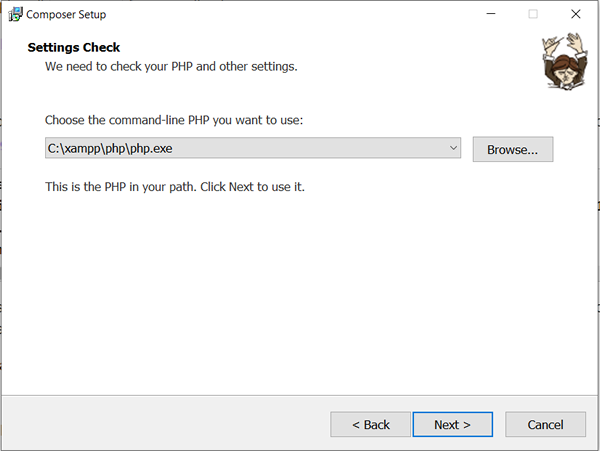

Anleitung Windows
Auf Windows ist PHP in der Kommando Zeile höchstwahrscheinlich nicht installiert, checke dies mit:
php -v
1. PHP von XAMPP der Kommandozeile hinzufügen
Besuche die folgenden Website und führe alle Schritte durch:
add xampp-php to environment variables
Starte nun die Kommando Zeile neu und teste erneut, ob PHP zur Verfügung steht.
2. Composer installieren
Zum Glück gibt es für Windows einen Installer, um PHP zu installieren. Hier kannst du ihn herunterladen:
getcomposer.org/download (Diese Website sieht auf dem Mac anders aus!)
Während der Installation von Composer wirst du gefragt, welche PHP-Version du dafür brauchen möchtest:

3. Composer testen
Zum Schluss schauen wir, ob Composer erfolgreich installiert wurde. Gib den Befehl
composer
in der Kommandozeile ein.